Facial keypoint detection is a fundamental computer vision task that involves identifying the locations of important facial landmarks such as eyes, nose, and mouth corners in images. This task has numerous applications including face recognition, emotion analysis, augmented reality, animation, medical diagnosis, and more.
In this project, I implement and compare different approaches for facial keypoint detection, ranging from direct coordinate regression to heatmap- based detection methods. I also explore how transfer learning from pretrained models such as Resnets and DINO models can improve performance on this task. I work with a dataset of facial images, where each face has been annotated with 68 keypoints represented as (x, y) coordinates.
I use a CNN with convolutional layers, batch normalization, and ReLU activations with pooling layers and dropout, and finally fully connected layers that output 136 values (68 keypoints × 2 coordinates). The input image is a grayscale image of 224x224 pixels. The architecture follows a progressive deepening approach, starting with a 32-filter convolutional layer and doubling the filter count with each subsequent layer (32→64→128→256→512). Each convolutional block includes batch normalization, ReLU activation, max pooling, and dropout (with increasing rates from 0.1 to 0.5 to prevent overfitting as the network deepens). After five convolutional blocks, I flattened the output and connected it to three fully connected layers that gradually reduce dimensions (from convolutional output to 5000, then 1000, and finally 136 features). I initialized the fully connected layers with Xavier uniform initialization to ensure proper gradient flow during training. The forward method applies this sequence of operations systematically to transform the input image into the final 136-dimensional output representation. For all the visualizations, the ground truth keypoints are shown in red and the predicted keypoints are shown in blue.
I analyzed several hyperparameters of this simple model to find the best model I could. To compare models, I looked at the average MSE loss of each model on the same set of images. In all of these comparisons, the average MSEs changed every time it was ran due to using different images. However, they are all around the same ballpark and are consistent across comparisons over different runs.
In these comparisons, note that there is a preview of one image on both models, and then the overall MSE loss over $770$ test images are shown along with the average MSE loss for the said set of images. The relationship of the average MSEs are what are important. After several testings, the average MSE over $770$ images of any model is only around $+/- 1$ of the average MSE, while it's trends in performance relative to other models are mostly consistent.
The first hyperparameter I tested was the learning rate of $0.001$ v.s. $0.0001$. I found that the $0.0001$ learning rate performed better. This makes sense because the model is very deep and the gradients are very small. Here are some results over one run of test images.
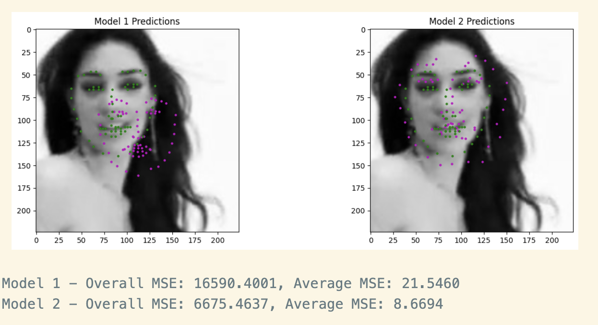
Model 1 lr = 0.001 |
Model 2 lr = 0.0001 |
|
|---|---|---|
| Loss Curve | 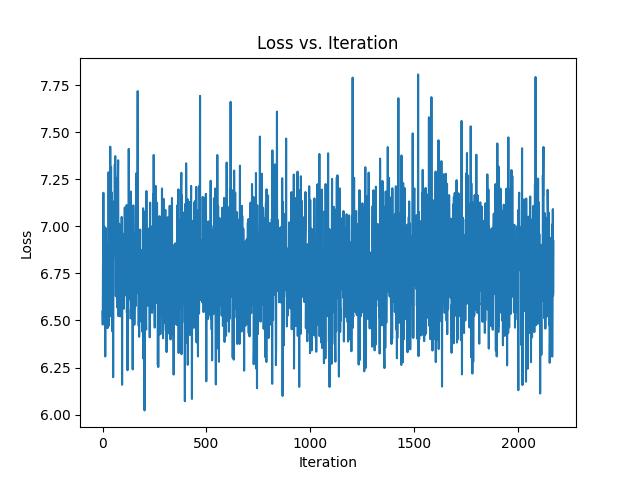 |
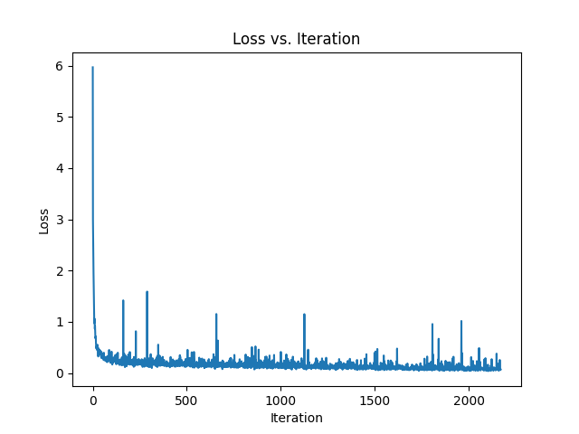 |
| Average MSE | 21.5 | 8.6 |
The second hyperparameter I tested was convolutional filter size of $4x4$ v.s. $5x5$. These models use the superior learning rate. I found that the $5x5$ filter size performed better consistently. Results on a different set of $770$ test images are shown below.
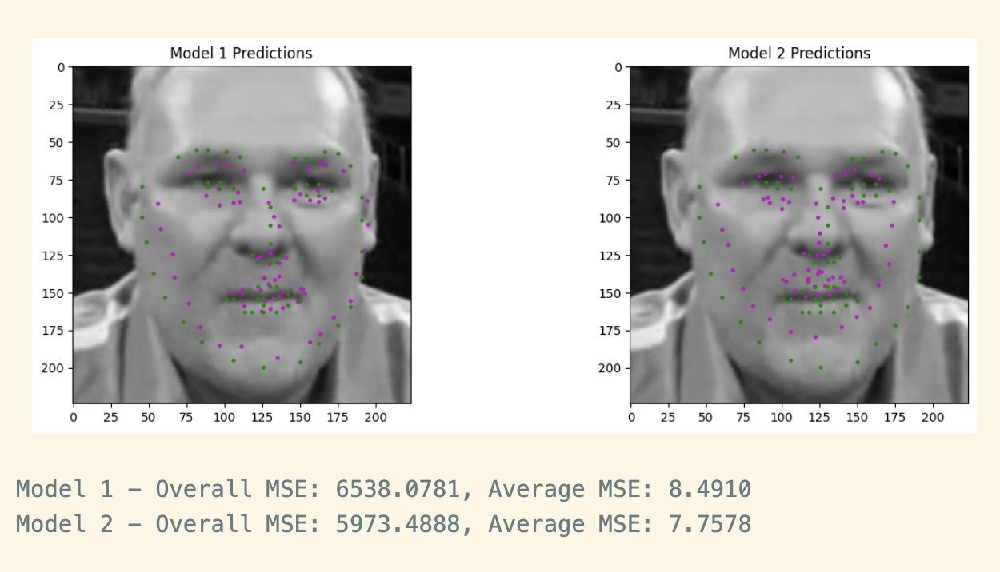
Model 1 filter size = 4x4 |
Model 2 filter size = 5x5 |
|
|---|---|---|
| Loss Curve | 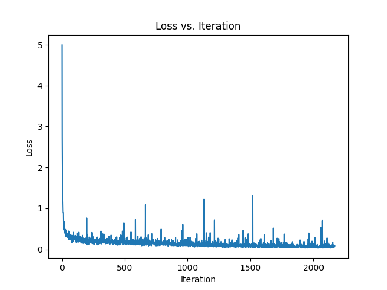 |
|
| Average MSE | 8.5 | 7.8 |
The third hyperparameter I tested was the loss criterion of MSE v.s. Smooth L1. These models use a $5x5$ filter size. I found that they are either negligible or that Smooth L1 sometimes performs better.
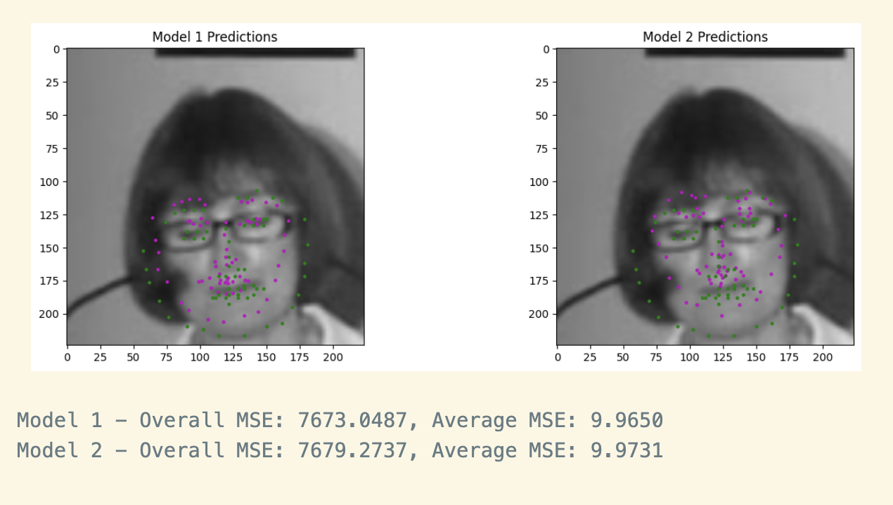
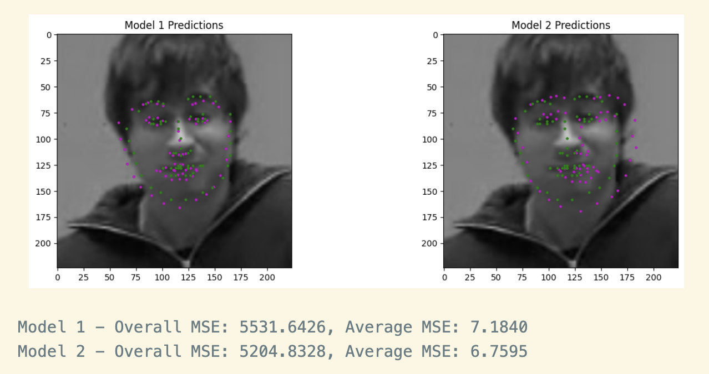
Model 1 loss = MSE |
Model 2 loss = Smooth L1 |
|
|---|---|---|
| Loss Curve | 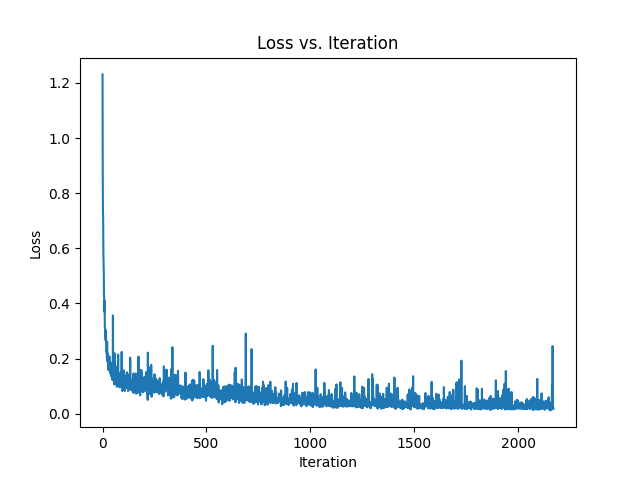 |
|
| Average MSE (1 of the runs) | 9.96 | 9.97 |
| Average MSE (Another run) | 7.18 | 6.76 |
Using the best hyperparameters, I have a model that is of learning rate $0.0001$, filter size $5x5$, and loss criterion of Smooth L1. I used this model to predict on the test images. The following are some of the predictions I made on the test images. It is a success.
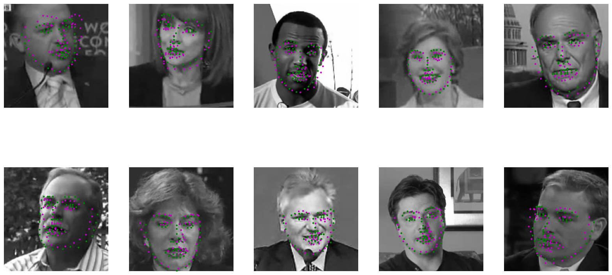
Transfer learning is a powerful technique that leverages knowledge gained from training on one task to improve performance on a different but related task. A ResNet model is based on an architecture that uses residual connections and transfer learning to improve performance on various computer vision tasks. For my purposes, I intended to implement a pretrained ResNet backbone for facial keypoint detection to explore if transfer learning can improve performance for this task.
A ResNet's final layer is a fully connected layer that does classification on extracted features. To adapt it for regression tasks like facial keypoint detection, I replaced the final fully connected layer with a new one, which is a regresssion head, that outputs 136 values (68 keypoints × 2 coordinates). To allow the ResNet to take grayscale images as input, I also convert the input image to 3 channels by repeating the grayscale channel three times. The rest of the ResNet architecture remains unchanged, preserving its feature extraction capabilities.
Additionally, I implemented a training strategy where I freeze the weights of the ResNet backbone during the initial training phase. This allows the model to learn the regression task without modifying the pretrained features. After a few epochs, I unfreeze the ResNet layers and continue training with a lower learning rate to fine-tune the entire model. This approach helps retain the knowledge from the pretrained model while adapting it to the specific task of facial keypoint detection.
It is able to work much better than the previous model. The average MSE loss is around $2.5$ on the test images, which is a significant improvement over the previous model. The following are some of the predictions I made on the test images.
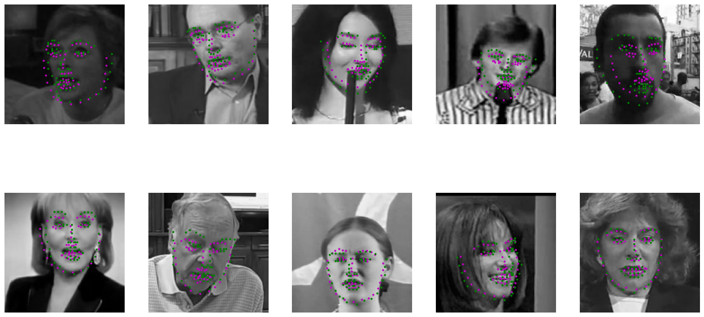
Here is a comparison with the previous model, where Model 1 is the ResNet model and Model 2 is the previous model.
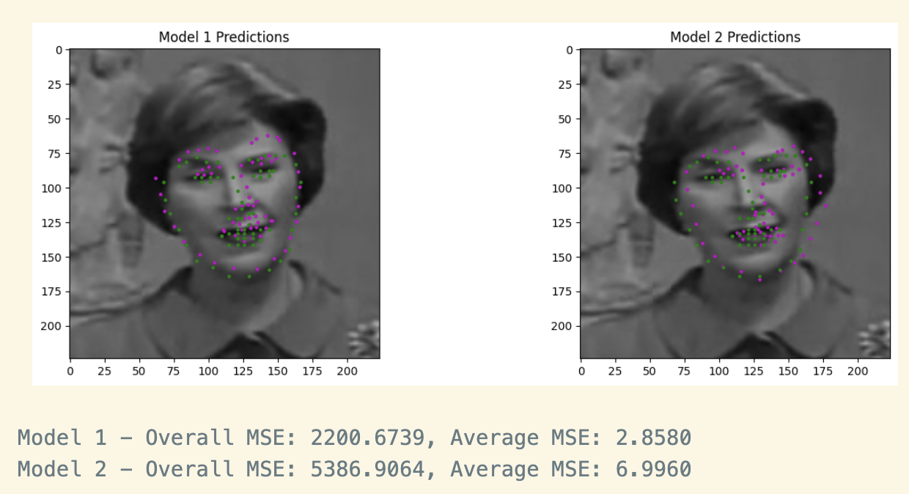
Model 1 ResNet |
Model 2 Simple CNN |
|
|---|---|---|
| Average MSE | 2.9 | 7.0 |
The loss curves are also shown below.
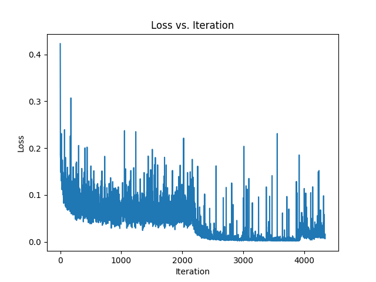
The DINO model is a self-supervised vision transformer that has been pretrained on a large dataset of images. It uses a transformer architecture to learn rich visual representations without requiring labeled data. The DINO model is designed to capture global and local features, making it suitable for various computer vision tasks, including facial keypoint detection. Instead of using a ResNet backbone, I explored using the DINO model.
The output from a DINO model is in itself the features of the image with a dimension of it's embedding size. To adapt it for regression tasks like facial keypoint detection, I simply fed the output features into a regression head which is the same that I used for the ResNet model. To also make this model work with grayscale images, I used a similar approach as with the ResNet model, where I repeat the grayscale channel three times to create a 3-channel input.
We first visualize the results. It seems reasonable and is able to detect keypoints around the face quite well.
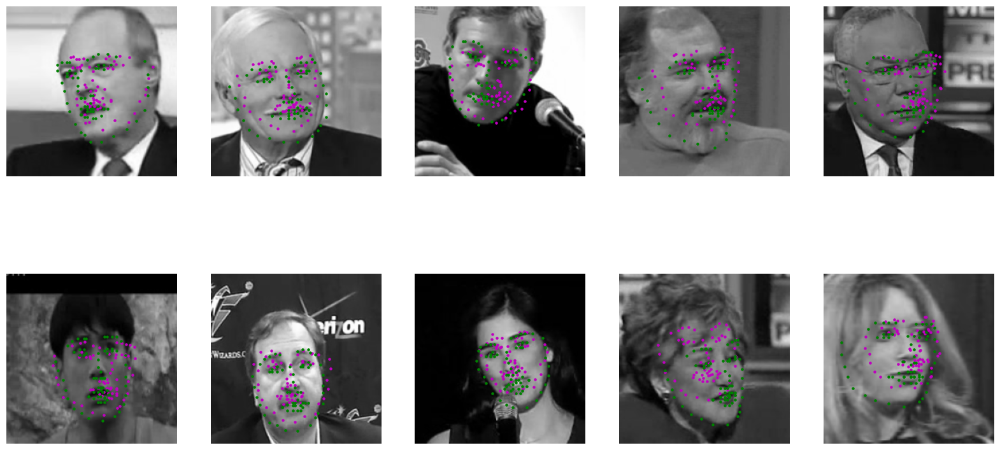
However, when comparing with the previous models, it turns out that the DINO model does not perform that well. Here is a comparison with the ResNet model, where Model 1 is the ResNet model and Model 2 is the DINO model.
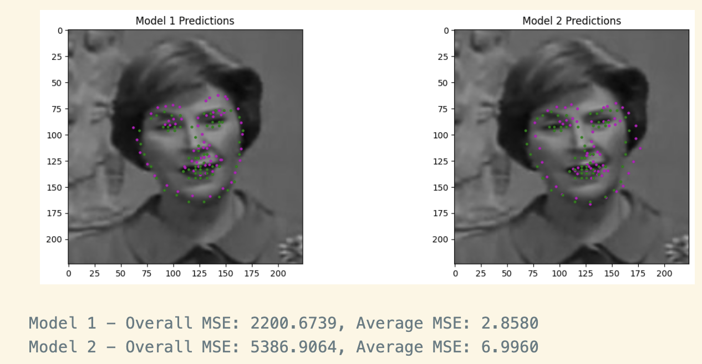
I then compared it with the simple CNN model, where Model 1 is the DINO model and Model 2 is the simple CNN model. The DINO model is doing just around or even slightly worse than the simple CNN model.
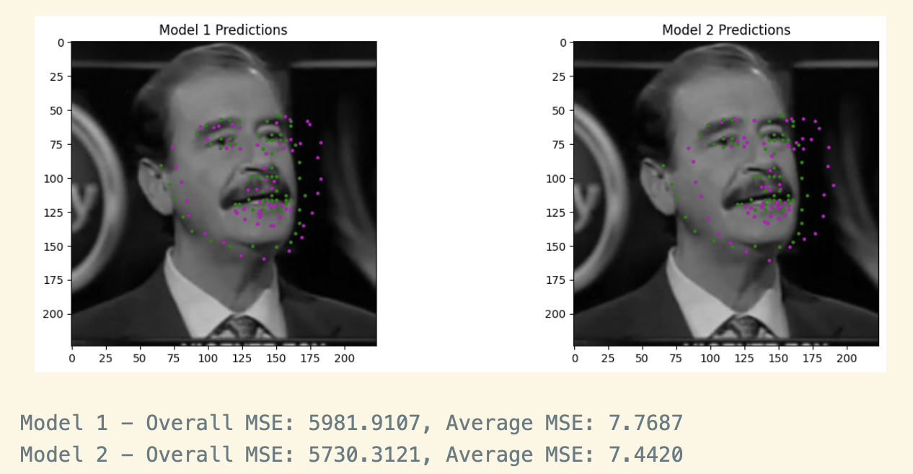
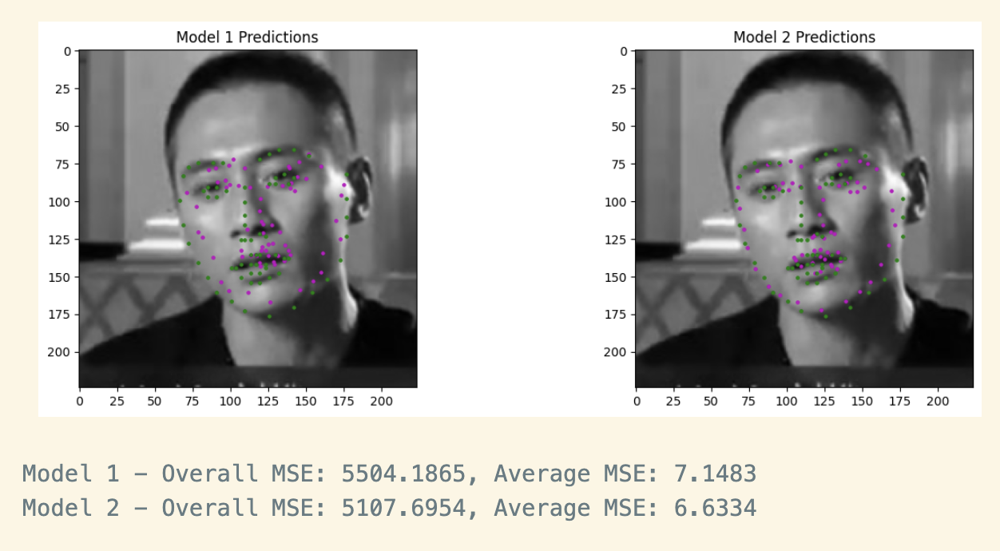
The loss curves are also shown below.
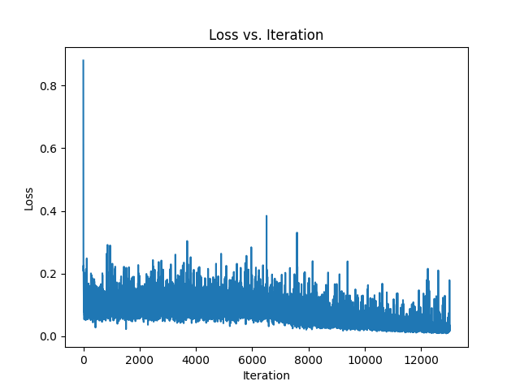
The ResNet model is still the best performing model. This actually came as a surprise to me but my theory for this is the difference between DINO's self-supervised learning and the supervised learning of the ResNet model. ResNet is able to learn features directly relevant to object recognition, makeing it good for keypoint detection. Meanwhile, DINO focuses on capturing global image semantics which may not prioritize the spatial precision needed for keypoint localization. DINO's self-supervised nature may also lead to less task-specific feature learning and so in this task it performs just around as well as the simple CNN model.
Direct coordinate regression has limitations in capturing the spatial structure of keypoints. In this part, I implement a more sophisticated approach inspired by Mask R-CNN, where each keypoint is represented by a heatmap.
First, for each keypoint, I generate a Gaussian heatmap centered at the keypoint with proper normalization. I do this for the images' ground truth heatmaps.
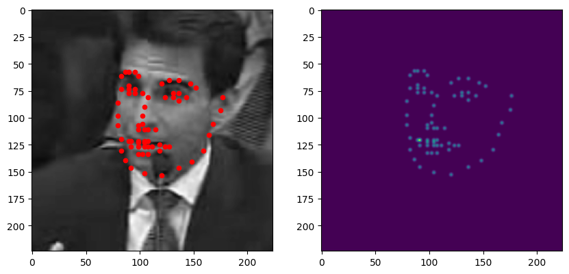
I then use a U-Net architecture to predict the heatmaps. The U-Net is a convolutional neural network architecture that is particularly effective for image segmentation tasks. It consists of an encoder-decoder structure with skip connections, allowing it to capture both local and global features. The U-Net takes the input image and generates a set of heatmaps, one for each keypoint. The specific U-Net architecture consists of a few downsampling and upsampling blocks with skip connections. It is described by this diagram, which is repurposed from a Computer Vision Project on Training Diffusion Models (Check Part 2)
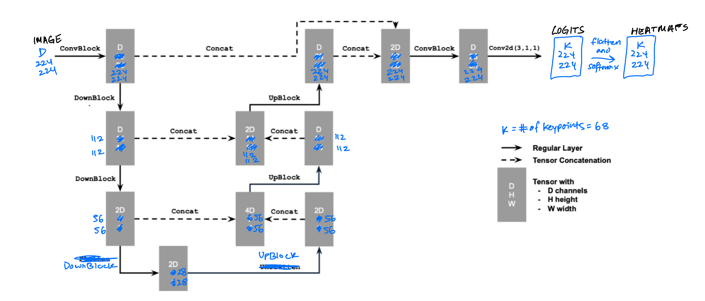
The diagram above uses a number of standard tensor operations defined as follows:
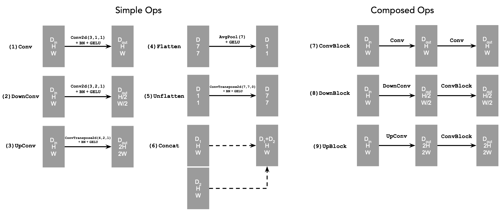
Note that we apply softmax to the output of the U-Net to ensure that the predicted heatmaps are normalized and sum to 1. This is important for interpreting the heatmaps as probabilities. We also do not flatten in the layers of the U-Net, as we want to keep the spatial structure of the heatmaps intact. Our output is of size $68 \times 224 \times 224$, where $68$ is the number of keypoints and $224 \times 224$ is the size of the input heatmap over the image.
Our specific hyperparameters for the U-Net are as follows:
We get the following loss curves for the U-Net model.
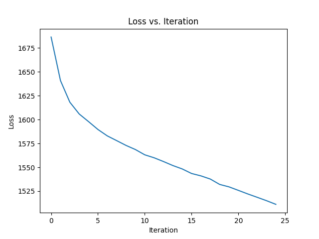
We get a pretty good prediction of the heatmaps. The left shows the original image, the middle shows the heatmap we get from the heatmap generation section, and the third image is the predicted heatmap from the unet, which is roughly similar to the middle image.
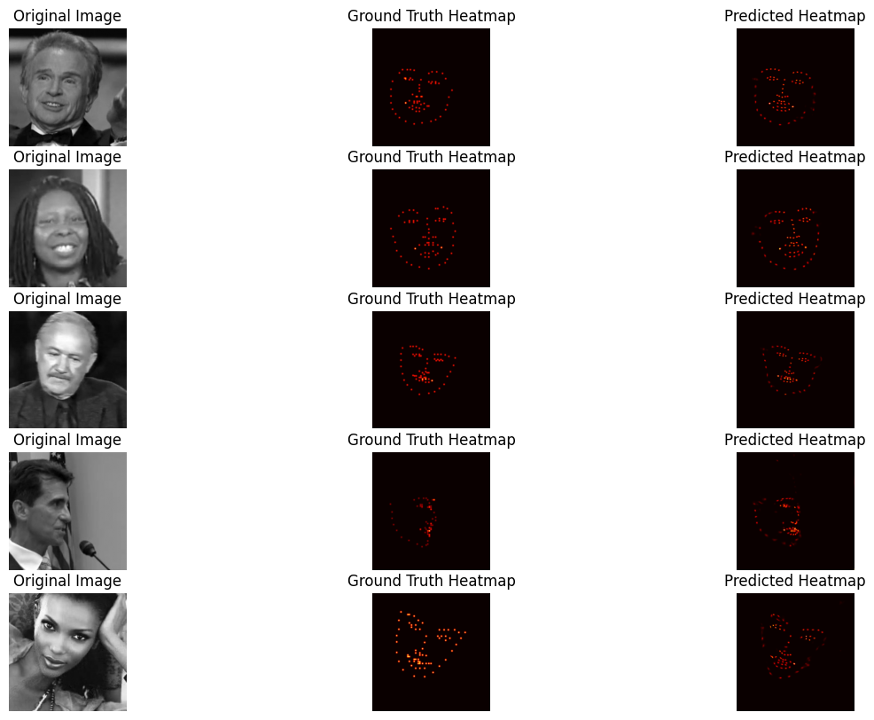
To predict the keypoints from the heatmap, we simply take the argmax of the heatmap for each keypoint. We can think of the heatmap as a probability distribution over the image, and the argmax (x,y) coordinate gives us the most likely location of the keypoint.
Here are some results of the U-Net model on the test images. Again, the ground truth keypoints are shown in red and the predicted keypoints are shown in blue.
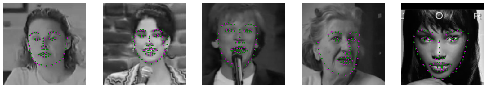
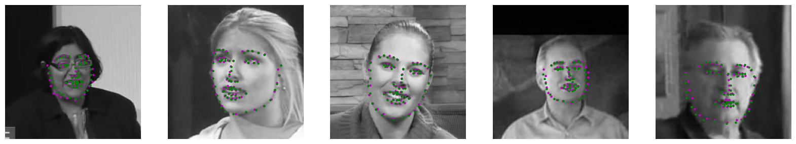
Over a set of $770$ test images, we are able to achieve as good as the ResNet model. It reaches around the MSE of 2.3, which is around the similar ballpark as the ResNet model and even slightly better. Consequently, it is also much better than the simple CNN model and the DINO model. Here are two examples over the $770$ test images.
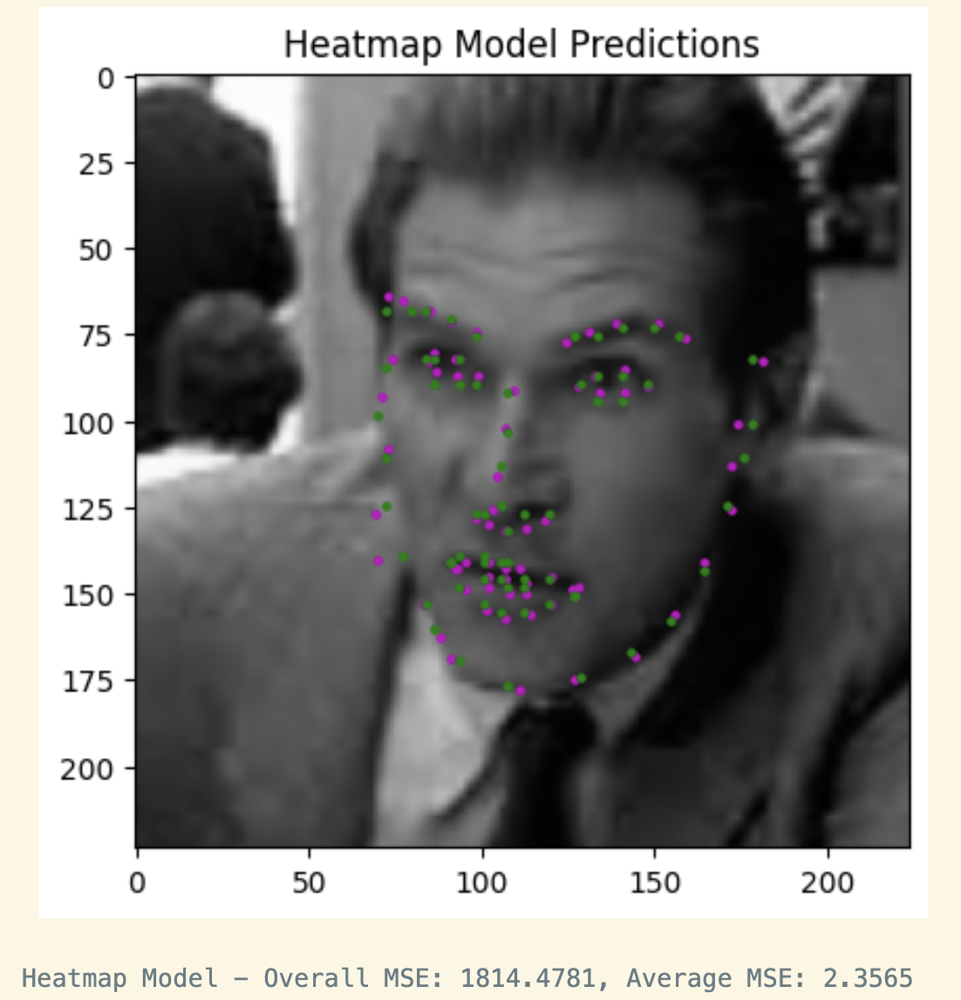
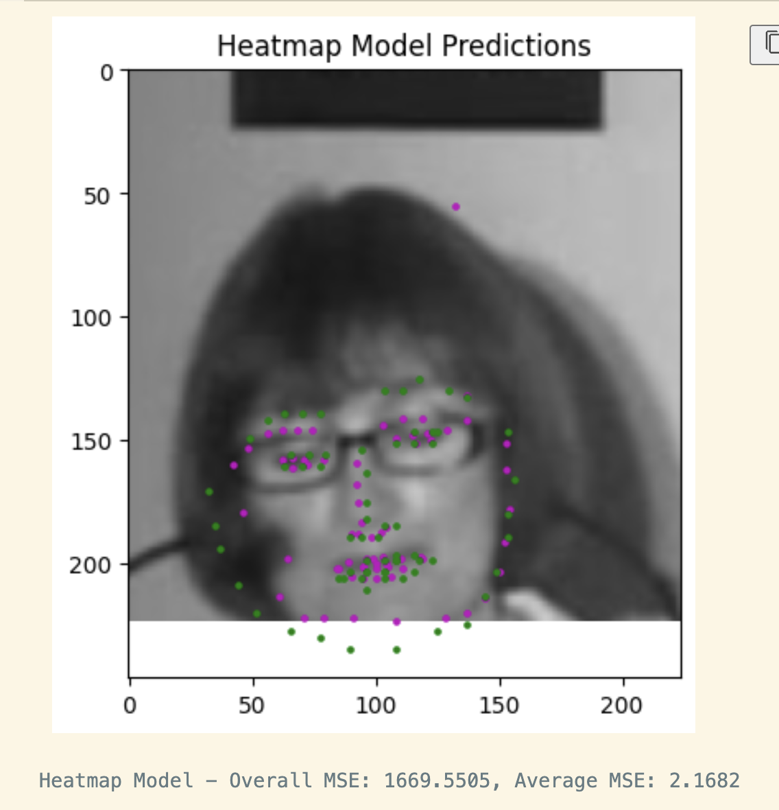
In this project, I implemented and compared different approaches for facial keypoint detection, including direct coordinate regression, heatmap-based detection, and transfer learning with pretrained models. The ResNet model outperformed the simple CNN model and the DINO model, achieving an average MSE of around 2.9 on the test images. The U-Net model also performed well, achieving an average MSE of around 2.3.
| Model | Strengths | Weaknesses | Approximate Average MSE |
|---|---|---|---|
| Simple CNN | Simple architecture, Strong baseline of performance | Sensitive to hyperparameters, Limited feature extraction capabilities | 7-9 |
| ResNet | Strong feature extraction, Transfer learning improves performance | Requires Fine-tuning, More complex architecture unless using pretrained model | 2-3 |
| DINO | Self-supervised learning, Global feature extraction for generalizable features | Less task-specific, May not prioritize spatial precision and does worse for keypoint detection | 7-9 |
| U-Net | Effective for heatmap-based detection, Captures local and global features | More complex architecture, Requires more computational resources but not too many parameters | 2-3 |
I faced many challenges with computational resources, as training deep models like ResNet and DINO required significant computational power and time. I initially used Metal Performance Shaders (MPS) for GPU acceleration, but I encountered issues with performance and eventually switched to CUDA with A100 GPUs on Google Colab. I also had to experiment with various hyperparameters and architectures to find the best-performing models.